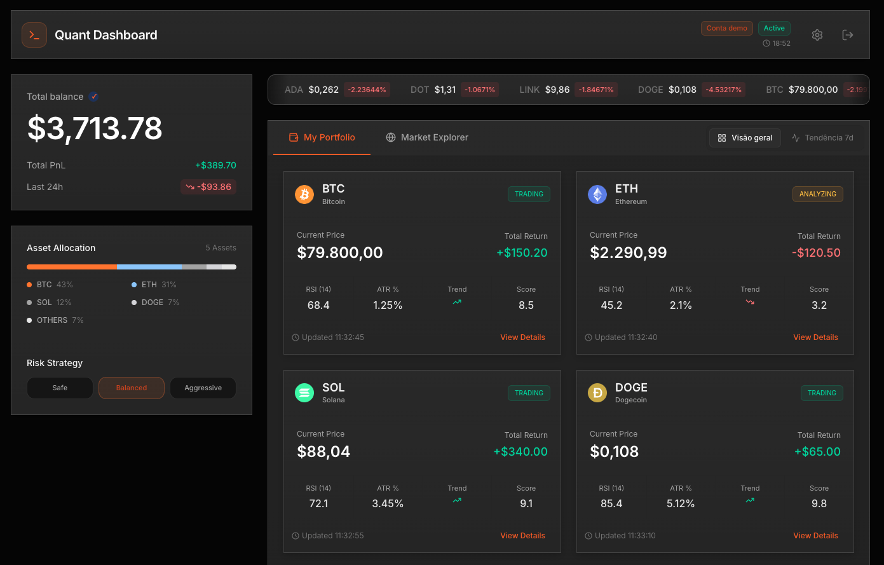
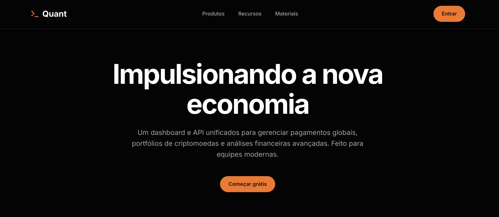

Case Study · Fintech SaaS
Quant AI Trader
Automated crypto intelligence, integrated with Binance.

Goal
Translate dense operational rules into a fluid visual experience
Product
Crypto-automation SaaS connected to Binance
UX Stack
Dashboard, dataviz, risk flows
Overview
Quant is a cryptocurrency automation platform integrated with Binance. The user connects their account, sets risk parameters, and the bot operates according to the configured rules, around the clock.
My job was to translate dense operational logic, full of market variables, into an interface that both a beginner and an experienced trader could read in seconds.
Premise
Users connect. The bot operates. The interface only interrupts reading when something genuinely needs attention.
Problem
Decisions under emotion
Volatility triggers fear and greed. Manual decisions become inconsistent across short windows.
Continuous monitoring
Tracking global markets 24/7 burns through any trader's cognitive budget.
Loose risk rules
Manual stop gain and stop loss tend to fail at the wrong time, usually during high volatility.
Fragmented execution
Strategy in spreadsheets, orders in another tab, monitoring in a third. Operational mistakes become routine.
Solution

- Automated execution of configured strategies
- Stop gain and stop loss applied without intervention
- Real-time monitoring of positions and P&L
- Strategy, risk and execution in a single screen
- Native integration with the Binance API
My Role
- UX strategy and definition of critical operational flows
- End-to-end product design of the main panel
- Visualization of market data and P&L
- Visual system: typography, spacing and UI states
- Fintech experience spec for engineering handoff
Design Decisions
Dark mode
Less visual fatigue across long sessions of charts and order monitoring.
Hierarchy
P&L, bot status and open positions are read before anything else on the screen.
Fast reading
Visual cues designed to interpret market shifts in a fraction of a second.
Reference Parameters
Stop Gain
+20%
Stop Loss
-5%
Operation
100% automated
Future Vision
Future versions let the user pick a bot profile based on their risk appetite, without re-tuning technical parameters on every trade.
Conservative
Capital preservation with steady growth.
Moderate
Balanced strategy with controlled volatility.
Aggressive
Maximum return via scalping in short windows.
Final
Project live, with the full Binance connection flow and operational dashboard.
Open the live project →